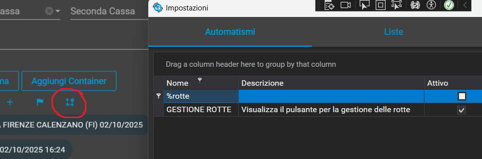

üìò Registro delle novita
üÜï Novit√† recenti
2025-12-29 - Visualizzazione tutti listini nel portale CRM - Visualizzazione contatti cliente da CRM
Nella scheda dell'anagrafica del cliente all'interno del portale CRM è stata inserita la possibilità di visualizzare i contatti del cliente.

Ora i contatti del cliente possono essere creati, modificati e cancellati da portale.
Inserita una nuova sezione all'interno del portale CRM per visualizzare tutti i listini

Questa schermata permette di filtrare in base al nome del listino, oppure in base al cliente e di scaricare il listino selezionato
2025-12-23 - Fatturazione attiva Iva/Esenzioni
In Fatturazione attiva -> Impostazioni -> Visualizzazioni, c’è la nuova funzione ‘Visualizza Codice + Descrizione nei menu iva/Esenzioni’

Questa funzione fa vedere nei menu dell’iva sia sui prezzi delle manuali che nelle 3 aggiunte per tutte le fatture le esenzioni con il proprio codice (ordinate per codice).

2025-12-05 - Rimorchi Tutti Vettore
Nel planner ora si possono vedere tutti i rimorchi, anche queando viene selezionato un vettore specifico
Per farlo si seleziona dalle impostazioni del planner

2025-12-04 - Flag No_Elenco
Il flag No_Elenco ora ha un senso. Viene usato per escludere i mezzi solo dai Viaggi e solo dal planner
2025-11-27 - Gestione Accise
Nell’inserimento delle accise, dovendo inserire valori diversi, è stata fatta la diversificazione tra Gasolio e HVO. E’ stata aggiunta nella tabella Accise la colonna Tipo dove viene registrato il valore GASOLIO o HVO. All’apertura del modulo viene fatta una query per aggiornare le registrazioni presenti con il valore GASOLIO

2025-11-25 - Punti default per containers (branch Container)
All'interno delle impostazioni dei containers è presente una sezione che permette di personalizzare i punti default quando l'utente entra all'interno della registrazione dei containers

Come funziona
Qui si possono aggiungere più punti di carico/scarico che verranno inseriti automaticamente all'interno del container quando l'utente entra nella registrazione
Con questa nuova funzione sarà possibile selezionare un cliente, una sua sede se presente, ed il tipo di conferma per il quale si vuole creare una registrazione di punti default
Mettiamo caso che vengano registrati 4 punti default per il
cliente "A":
Una volta entrati nella registrazione container se l'utente
seleziona questo cliente verranno automaticamente caricati
nella registrazione i punti salvati all'interno delle
impostazioni
Logica di distinzione set
Se viene registrato per lo stesso cliente un set di punti
default per tipo conferma = "Import" questo set di punti
default verrà utilizzato solamente quando nella registrazione
verrà inserito il cliente "A" e tipo di conferma "Import"
Se invece seleziona "Export" ad esempio, verranno caricati i
punti default generici del cliente "A"
Copiare set di punti
C'è inoltre la possibilità di copiare un set di punti
registrati per un cliente (o altro tipo di filtro) per
qualsiasi altra selezione
Per fare questa cosa, prima selezionare i filtri sui quali si
vuole copiare il set di punti, poi premere il tasto in alto a
destra della finestra.
Verrà aperta una finestra di dialogo identica a quella
precedente che permetterà di visualizzare tutti i set di punti
default. Una volta trovato il set che si vuole copiare premere
di nuovo il pulsante in alto a destra
2025-11-24 - Rilocazione di SatToolsR - Campi completamento automatico (Branch container)
Inserita una nuova scheda all'interno di "Sistema Satellitari" per condividere lo spostamento di SatTools all'interno del menu (Dove trovare questa pagina)
All'interno delle impostazioni condivise dei container e delle
conferme, è stata aggiunta una sezione per la gestione dei
campi di completamento automatico. Questa sezione permette di
configurare dei campi in modo che vengano automaticamente
riempiti in base alle selezioni dell'utente

In cima alla sezione, ci sono tre pulsanti radio che
permettono di selezionare il modulo nel quale si desidera
configurare i campi di completamento automatico: Conferma,
Fatturazione o Container.
Sotto questi pulsanti, ci sono delle combobox, una per il
cliente, una per la sede del cliente (visibile solamente se il
cliente ha delle sedi abbinate) e una per il tipo di conferma
(che definisce se è import o export ad esempio). Questi filtri
permettono di specificare ulteriormente quando i campi di
completamento automatico dovrebbero essere applicati.
Questa implementazione attualmente avrà effetto solamente all'interno del modulo dei containers
Alcuni dei campi presenti all'interno di questo screenshot non saranno più presenti in futuro in quanto alcuni di questi non sono campi che possono essere modificati dall'utente, ma campi calcolati o derivati da precedure interne al programma
2025-11-18 - Campi Obbligatori (branch container)
All'interno delle impostazioni delle conferme, oppure nelle impostazioni condivise dei container si può accedere alla sezione dei campi obbligatori
Qui si possono selezionare i campi che devono essere compilati obbligatoriamete per completare la registrazione della conferma, fatturazione o container

Con i primi tre "Radio buttons" si può selezionare il modulo per il quale si vogliono impostare i campi obbligatori
Con le combobox in seconda riga si possono ulteriormente controllare caso a caso quando i campi risulteranno obbligatori o meno
-
NOTA BENE
Questi filtri sono forzati, se la registrazione viene fatta per il cliente "A" senza indicare il Tipo Conferma (Import, Export...), ma i campi obbligatori sono stati compilati come cliente: "A" Tipo Conferma: "IMPORT" allora non verranno trovati i campi obbligatori
2025-11-11 - Riconoscimento Codice Prodotto - Impostazione container
Obiettivo: Auto-compilare le anagrafiche (misure, nome) partendo dal codice inserito.
Logica:
1. Verifica Attivazione: Controlla prima se la funzione "LEGGI CODICE PRODOTTO" è attiva. Se è disattivata, la procedura si ferma qui.
2. Ricerca (se attiva): Se la funzione è
attiva e l'utente ha inserito un testo nel campo
CodiceProdotto, il sistema cerca nell'anagrafica
"Prodotti Cliente" un codice che contiene quel testo.
Risultato: Se trova una corrispondenza, auto-compila Nome Prodotto, Larghezza, Altezza e Lunghezza della riga.
Modifica presente sia nel menu attuale che nel branch
Implementata personalizzazione per i containers che permette di aggiornare i dati all'interno delle tratte ogni volta che vengono aggiornati all'interno della madre.
Nome personalizzazione:
SALVA DETTAGLI CONTAINER NELLE TRATTE
Dati che vengono salvati nelle tratte:

2025-11-07 - Visualizzazione campo CER
Nella tabella Mezzi è presente il campo booleano CER. Nella vecchia versione c’era un pannello in anagrafica dove si attivava con un flag, ora in Elite questo campo non viene gestito, al suo posto c’è la possibilità di indicare direttamente gli articoli.

Nel caso il campo venga visualizzato nella ricerca, ora, verrà visualizzato attivo se è presente almeno un elemento nella lista

2025-11-06 - Listini con piu' um
Questa funzione serve a recuperare il listino prezzi corretto per un ordine, cercando tra diverse unità di misura (UM) per trovare quella che produce l'importo finale più alto.
Va impostata cliente per cliente dentro ai listini

Il processo si svolge come segue:
1. Inizializzazione: Salva il committente originale e prepara una variabile (listinoMigliore) per memorizzare il listino migliore trovato finora.
2. Ciclo sulle Unità di Misura: La funzione esamina ogni singola 'Unità di Misura' (come BANCALI, KG, COLLI, ecc.) che è stata passata nella lista 'umQtaList'.
3. Recupero Listino per UM: Per ogni UM, cerca il listino corrispondente. Controlla se il listino deve essere cercato sotto il committente specifico o sotto "COMUNE".
4. Applicazione Regole Quantità: Una volta trovato il listino
per quella UM, applica delle regole alla quantità
(umQta.Qta):
- Se la quantità è inferiore al 'Minimo Fatturabile'
(quantità) del listino, la quantità viene aumentata a quel
minimo.
- Se il listino è 'Fisso' (IsFisso), la quantità viene forzata
a 1.
5. Calcolo Importo Provvisorio: Calcola un importo provvisorio moltiplicando l'importo del listino per la quantità (ormai aggiornata).
6. Applicazione Regola Minimo Importo: Confronta l'importo
provvisorio calcolato con il 'Minimo Fatturabile Importo' del
listino.
- Se l'importo calcolato è più basso del minimo importo, la
funzione sovrascrive l'importo del listino (Lis.Importo) con
il valore del minimo importo. Inoltre, imposta il listino come
'Fisso' e la quantità a 1.
7. Confronto e Selezione: L'importo finale ottenuto per questa
UM viene confrontato con l'importo del 'listinoMigliore'
trovato finora.
- Se l'importo corrente è più alto (o se è il primo listino
che esaminiamo), questo listino diventa il nuovo
'listinoMigliore'.
8. Restituzione: Dopo aver controllato tutte le UM nella lista, la funzione restituisce il 'listinoMigliore' (cioè quello con l'importo finale più alto) che ha trovato. Se non ha trovato nessun listino valido, restituisce un listino vuoto.
2025-11-05 - Duplica Avanzato in viaggio - Ripartizione per listino
Dentro alle conferme del viaggio si puo' duplicare l'ordine che verra' riassegnato al viaggio

Al posto di fare la ripartizione a km, si possono assegnare i prezzi alle tratte in base al listino.

ALTAMENTE SCONSIGLIATO vi faccio solo vedere che c'e'
ovviamente ci devono essere anche i listini per le tratte
E' anche stata messa la ricerca delle impostazione generali
2025-11-03 - Mappa Manuale
Le mappe manuali sono state reintegrate nelle mappe standard
Se esiste gia' un percorso carica la mappa standard, altrimenti se non esiste o se viene premuto aggiorna si puo' trascinare il percorso.
L'algoritmo di routing legato e' lo stesso di ogni altro processo quindi carica il percoso i tempi e i pedaggi sempre nello stesso modo.
2025-10-14 - Considera Viaggi Compresi - Cambiamento categorie planner - Filtro zona arrivo planner
Nel Riepilogo vengono presi in considerazione gli importi delle conferme che cadono nel periodo di riferimento.
Ad esempio se ho una conferma che parte dal 31° gennaio 2025 e termina il 1 febbraio 2025, verrà considerata nel riepilogo di febbraio.
Nel planner ora vengono mostrate le categorie divise tra principali e sottocategorie
Stessa cosa per gli accessori
Tutte queste come scritto in precedenza per un altra modifica possono essere definite in anagrafica
E' stato introdotto il filtro zona di arrivo.
Questo filtra nel campo Verso del viaggio che e' autogenerato dal viaggio al salvataggio in base alla zona dell'ultimo poi
NB: Il filtro non sarà retroattivo per i viaggi già esistenti a meno che non vengano risalvati.
IMPORTANTE per il corretto funzionamento vanno impostate bene le zone nel planner
2025-10-14 - Aiuto risoluzioni problemi satellitari - Bollo virtuale automatico in fattura elettronica
All'interno della pagina dei
sistemi satellitari
nel Capitolo "Debug" è possibile raggiungere una sezione di
aiuto per la risoluzione dei problemi più comuni.
DebugSatellitariIssues
Nel modulo fatturazione, nelle impostazioni avanzate c’è una
nuova voce:
Attiva il bollo virtuale automatico in fattura elettronica: In
anagrafica cliente, nella finestra dell'iva/esenzioni si vedrà
una colonna che si chiama AttivaPerBollo', (naturalmente ci
devono essere anche i codici, CodTip_IVA_FE)

che se spuntata permetterà il conteggio dell'importo esente
(es. N1, N2.1,..) fino al raggiungimento/superamento
dell'importo di 77.47 per far scattare il bollo virtuale
automaticamente.
Nel modulo trasferimento tracciati nel momento in cui si
creeranno le fatture si aprirà la solita finestra di
accettazione, in questo caso però, la spunta ‘Bollo Virtuale‘
non ci sarà più
E' IMPORTANTISSIMO selezionare la voce attiva per bollo in
iva/esenzioni; se non viene fatto, il bollo virtuale NON VIENE
INTEGRATO nelle fatture, poiché con questa funzione il bollo
manuale viene DISABILITATO.
2025-10-08 - Ricalcolo Km da Data a Data
Nella scheda di inserimento dei rifornimenti, c’è un tasto per aggiornare i km leggendoli dalla tabella dei valori scaricati dai satellitari. Viene eseguita la query: SELECT TOP 1 * FROM SatellitariEventiVeicoli WHERE Targa = @tg AND Data <= @dtS ORDER BY Data DESC
E’ stata creata una funzione che permette l’aggiornamento di questo campo di una serie di rifornimenti filtrando da data a data.
2025-10-03 - Caricamento Veloce Conferme Tramite Griglia
C’è una funzione attivabile che permette all’interno dei viaggi di inserire, volendo anche modificare, le conferme tramite una griglia di inserimento rapido.
Nel viaggio compare questo tasto
E’ possibile inserire i dati nella griglia, ricercare Cliente,Mittente,Destinatario da menù a discesa
Al termine con il tasto salva si memorizzano le righe, creando la conferma, con tratta, ed abbinandola al viaggio. Per la configurazione delle colonne utilizzabili, c’è un apposito pannello, che permette di omettere e ordinare. Ulteriori campi vanno valutati, soprattutto perché è da capire da dove devono leggere eventuali liste collegate (tipo mittenti da lista).
Ad ora con Bancali, viene inserita 1 riga prodotto con la quantità inserita. Per il prezzo, viene inserita un riga di prezzo manuale con quantità 1.
2025-10-02 - Aggiunta Rotte Predefinite - Abilita visualizzazione per sede competenz
Questa funzionalità permette di aggiungere rapidamente un insieme di punti di interesse (carichi/scarichi) a un viaggio esistente, selezionando una rotta predefinita.
È accessibile tramite un pulsante dedicato che avvia la procedura di selezione e aggiunta.
Flusso Operativo
Il processo si svolge in diversi passaggi chiari per l'utente:
- Selezione della Rotta: Al click sul pulsante, il sistema recupera tutte le rotte uniche disponibili e le mostra all'utente in una finestra di dialogo. L'utente sceglie la rotta desiderata dall'elenco.
- Recupero dei Punti: Una volta scelta la rotta, il sistema carica tutti i punti associati a quel codice di rotta.
- Calcolo Posizione: Viene calcolata la prima posizione libera nel viaggio corrente. Questa sarà la posizione di partenza per il primo punto della rotta da aggiungere.
- Aggiunta Sequenziale: I punti della rotta vengono aggiunti al viaggio uno dopo l'altro, garantendo che vengano accodati correttamente alla fine del percorso esistente.
Logica di Assegnazione Posizione
Una delle parti fondamentali della funzionalità è la gestione delle posizioni dei nuovi punti, per garantire coerenza e ordine nel viaggio.
La logica applicata è la seguente:
- Ordinamento Preliminare: I punti appartenenti alla rotta selezionata vengono prima di tutto ordinati in base alla loro posizione predefinita (es. 1, 2, 3...). Questo assicura che la sequenza interna della rotta sia sempre rispettata.
- Ricalcolo Totale: Le posizioni predefinite (1, 2, 3...) vengono usate solo per l'ordinamento. Il loro valore finale viene completamente ricalcolato.
- Accodamento Automatico: Il sistema prende la posizione più alta già presente nel viaggio (es. 10), aggiunge 1 (ottenendo 11) e assegna questa nuova posizione al primo punto della rotta. I punti successivi avranno posizioni incrementali (12, 13, e così via).
Il vantaggio è che le rotte predefinite si comportano come "blocchi" sequenziali che possono essere aggiunti a qualsiasi viaggio, indipendentemente dal numero di punti già presenti, inserendosi sempre correttamente alla fine.
Questa impostazione introduce un livello di filtraggio avanzato nel modulo di fatturazione, basato sulla sede di competenza associata alle conferme d'ordine.
ATTENZIONE: Per poter funzionare, questa
opzione richiede che sia già attiva l'impostazione principale
di visualizzazione per pianificatori
(VisualizzaPerSedeUtente).
Comportamento Standard (Impostazione Disattivata)
Di default, questa impostazione è disattivata.
Il motivo è che la maggior parte dei clienti non utilizza il concetto di "sede di competenza" per la fatturazione. Lasciando l'opzione disattivata, l'operatività del modulo rimane invariata e familiare per tutti gli utenti.
Funzionamento con Impostazione Attiva
Se un cliente richiede l'attivazione, il comportamento del modulo fatturazione cambia in base al tipo di utente che effettua l'accesso:
-
Utente Standard (con sedi assegnate):
Un utente a cui sono state associate una o più sedi vedrà unicamente le conferme d'ordine la cui sede di competenza corrisponde a una di quelle a lui assegnate. Questo permette di limitare la visibilità ai soli documenti di pertinenza. -
Utente Amministratore:
Un utente con privilegi di amministratore mantiene una visibilità completa, ma con un'interfaccia migliorata. In alto nella schermata comparirà un nuovo menu a tendina chiamato ‘Filiale’. Questo filtro gli permetterà di selezionare una sede specifica e visualizzare, di volta in volta, tutte le conferme da fatturare per quella singola filiale.
Il vantaggio è quello di poter segmentare e organizzare il lavoro di fatturazione in aziende con più sedi operative, senza perdere il controllo centralizzato da parte degli amministratori.
2025-09-30 - Prototipi Ordini
Attivando nella conferma l'impostazione VEDI PROTOTIPI questa fara' venire fuori una forbicina in alto nella conferma
Qui si puo' definire il percoso che dovra' fare l'ordine

Il vantaggio e' che posso impostare delle tratte che verranno viste in pianificazione anche se devono ancora essere fatte
per definire i Prototipi c'e' il modulo apposito
quando verranno abbinate semplicemente verra' abbinata la tratta al viaggio e messa la targa
Nella pianificazione è presente un campo chiamato ProssimaDestinazione
La sua funzione è restituire una stringa che descrive il tipo di viaggio in base alla presenza della parola "mag" nei campi "Mittente" e "Destinatario".
-
La logica applicata è la seguente:
- Restituisce "RITIRO" se "mag" è presente solo nel campo Destinatario
- Restituisce "TRATTA" se "mag" è presente sia nel Mittente che nel Destinatario
- Restituisce "CONSEGNA" se "mag" è presente solo nel campo Mittente.
- Restituisce una stringa vuota se "mag" non è presente in nessuno dei due campi.
2025-09-30 - Impostazioni Stampe
I controlli presenti nella sezione Stampe sono stati aggiornati e resi più rigorosi, al fine di garantire una gestione più sicura e tracciabile:
- È prevista una doppia conferma al momento del salvataggio quando si modificano o si inseriscono nuove righe.
- È prevista una doppia conferma anche per l’eliminazione tramite tasto destro; una terza conferma, aggiuntiva, è protetta da password (diversa da quella abituale).
Motivazioni dell’intervento:
- È stato riscontrato che le impostazioni di questa griglia vengono talvolta modificate o eliminate senza un’adeguata consapevolezza delle conseguenze, generando problematiche nella gestione di funzionalità collegate, come ad esempio le API. Qualora una riga possa sembrare incoerente con l’attività in corso (ad esempio durante la configurazione delle etichette dei bancali), non deve essere modificata, in quanto non è correlata al problema specifico.
- Nel caso in cui il nome di un report coincida con il report stesso, la configurazione è da considerarsi corretta: il collegamento con altri dati avviene infatti proprio tramite il nome. Inoltre, è opportuno sottolineare che alcune configurazioni particolari non riportano un utente associato, in quanto si tratta di impostazioni o configurazioni automatiche.
Conclusioni:
Le configurazioni di questa sezione non rappresentano soltanto stampe automatiche interne a Elite, ma svolgono anche la funzione di parametri per altri moduli e funzionalità. È pertanto fondamentale limitarsi a modificare o gestire esclusivamente ciò che è conosciuto e chiaramente identificato, come ad esempio la configurazione EtichettaBancali.
2025-09-25 - Combo box selezionabili in griglia
Dentro alle impostazioni di base sotto la voce visualizzazione attivare al spunta
A questo punto nei viaggi bisogna mettere visibili le seguenti colonne
e refreshare la griglia
Le colonne diventano combo selezionabili e al cambio del mezzo se disponibili vengono anche cambiate le targhe associate
Dato che vengono mostrate tutte le targhe imposta anche il vettore nel viaggio
Per confermare le modifiche selezionare i viaggi e con il tasto destro si possono salvare le modifiche nel db
AVVERTENZE
le targhe al momento non si possono cancellare direttamente dalla griglia ma basta entrare nel viaggio e toglierla
per un limite del componente non posso cercare tra la lista digitando da tastiera
2025-09-24 - Separazione punti per utente
E' stata introdotta una nuova funzione per quanto riguarda la visibilità dei poi nel planner
Il fomato e': idPunto;idPunto;idPunto ma tranquilli quando fate tab c'e' una validazione scritta sotto
Qui e' possibile scrivere gli id dei punti che si vuole mostrare per utente
Non occorre attivare nulla e' una funzione standard
Una volta che trova popolato quel campo nell'utente filtrera' nella colonna dei punti del planner solo quei punti
2025-09-23 - Gestione trasferte con valori nuovi
Di default sono stati messi i nuovi valori.
Quando si crea un nuovo autista verra' creata la tabella ParametriTrasferte che terra' i nuovi valori
Sono modificabili al momento SOLO da database
E' stata creata anche la funzione di aggiornamento in modo molto semplice, basta fare tasto destro sopra la trasferta e confermare
2025-09-16 - Mittenti Destinatari - NUOVO CONTATORE - Colore relativo all'azienda - Ricerche Full Text - Targhe su tratte
Duplicazione Mittenti Destinatari
Aggiunto il tasto DUPLICA in basso della videata per poter duplicare i Mittenti Destinatari. Si apre un ulteriore finestra dove viene riportato il cliente ed il tipo, è possibile anche non definire il cliente e mettere come tipo COMUNE a seconda che si voglia duplicare mitt/dest legati a clienti o comuni
Abbiamo risolto il millennium bug del contatore delle conferme
E' cambiato il modo di gerare le conferme. Voi non vi dovreste accorgere di nulla se funziona tutto
Si puo' anche impostare la lunghezza del contatore facendo
UPDATE DatiBase SET LunghezzaContatore = 9
dove il nove rappresenta il numero di cifre dopo l'anno
E' DA TESTARE BENE
Se dovessero uscire degli errori ai clienti molto probabilmente ci sono delle conferme duplicate
Nel planner e' stata creata un impostazione che colora in base alla zona dell'azienda
E' descritto come funziona nell'impostazione
Ora i campi mezzo, rimorchio e autista hanno la ricerca per parola contenuta
Esempio scrivo “MARIO” e nella combo visualizzare tutti gli autisti che contengono la stringa “Mario”
E' da testare
Nel chip delle tratte vengono fuori gli elementi coinvolti nel trasporto
Si attiva nelle conferme attivando TARGHE SU TRATTE
2025-09-15 - Fatturazione Attiva
Integrazione Impostazioni su modulo:
Ora in Fatturazione attiva in alto a sinistra potete vedere il tasto Impostazioni, come per il modulo riparazioni:
Premuto questo tasto si aprirà la finestra delle impostazioni, che permette al utente finale di cambiare le impostazioni di Automatismi e Visualizzazioni; inoltre c’è il tasto con il lucchetto (sotto password) che permette ai tecnici di attivare le impostazioni avanzate:
2025-09-11 - Richiesta eliminazione Viaggio - liste in sola lettura - impostazione ore planner - Salva in Viaggio
Dalle conferme al posto di cancellare il viaggio in automatico quando rimane vuoto e' stata creata l'impostazione per chiederlo
si chiama RICHIEDI ELIMINAZIONE VIAGGIO e si attiva dentro al modulo conferme
Negli ordini si possono impostare delle liste in sola lettura per evitare modifiche accidentali.
Nella definizione delle liste, si può attivare il flag: Rende la lista in SOLA LETTURA nella conferma
Un cliente vuole gestre i viaggi dicendo: Io a prescindere ho il camion che sta fuori X ore. Voglio vedere se l'operativo lo impegna tutte le ore che sta fuori
Per fare questo sono necessarie queste impostazioni
Dentro alle impostazioni planner, configurazione rettangolo
Dentro alle impostazioni planner cerca Data e attivare

Dentro alle impostazioni di base di Elite

E' necessario definire le ore di lavoro nell'anagrafica del mezzo che sarebbero le ore di suddivisione spese
Quando viene assegnato il viaggio con tutte queste impostazioni attiva il viaggio verra' creato con Data Partenza Viaggio + Ore lavoro Mezzo
questo e' il risultato sul planner
Se nelle impostazioni delle conferme viene attivata la funzione VEDI SALVA IN VIAGGIO appare un bottone che permette di salvare direttamente in viaggio come se si usasse l'automatismo
ovviamente e' necessario inserire le targhe altrimenti non crea nulla
Se si usa anche l'automatismo per creare un viaggio, sicuramente dara' problemi
2025-09-08 - Controllo accessi clienti TIR / TIR PLUS
Per i clienti che utilizzano ancora TIR / TIR Plus è stato rafforzato il controllo degli accessi degli utenti al programma. In particolare, ogni volta che un utente aprirà un modulo dal menu, il sistema verificherà se il cliente ha il programma attivo o meno.
Questa modifica si è resa necessaria perché alcuni clienti, pur di non farsi bloccare il programma, lasciavano i PC accesi con l’applicativo aperto. In questo modo, anche se il programma resta attivo, nel momento in cui si tenta di aprire un modulo senza un accesso valido, il sistema genererà un errore e si chiuderà automaticamente.
IMPORTANTE
La modifica entrerà in funzione solo se il menu TIR
(eseguibile
Server > _Versione Aggiornata > Click Beta >
MenuClick) sarà aggiornato alla versione datata 08/09/2025 o
successiva.
2025-08-29 - Accessori in Ordine - Mezzi passaggio intermodale - Calendario Presenze
Per filtrare i mezzi prima di pianificare, se nella conferma viene attivato:

Allora vengono mostrate le definizioni degli accessori definiti in anagrafica

IMPORTANTE
Gli accessori devono essere riassegnati, in quanto la tabella non aveva chiavi per collegare i dati
Nel passaggio navale vengono mostrate le targhe con il passaggio gia' creato. Quando faccio ad esempio apri passaggio dal planner vedo

Creato il nuovo calendario eventi al moemento solo per visualizzazione

2025-08-27 - Fix PVIR
Corretta l'ordinamento degli ordini del pvir. L'ordinamento ora segue gli ordini selezionati dal mouse in ordine di click come prima.
E' stato anche migliorata la gestione delle date degli ordini che non rispecchiano quelle del viaggio

2025-08-26 - Trasporti - Visite Mediche - Autisti Tessere
Aggiunta la sezione nei trasporti in modo da poter controllare oltre l'esperienza dell'autista anche tutte le altre sezioni

In pianificazione il controllo e' stato migliorato per un miglior riepilogo

Migliorata UI delle visite mediche, era superfluo il tab
Aggiunto campo Codice Trasporto. Cosi si puo' definire che e' necessaria per un Trasporto

Aggiunto codice trasporto della tessera
Cosi si puo' definire che e' necessaria per un Trasporto
2025-08-25 - Gap ricerca viaggio - Duplica POI
Reintrodotto il campo che permette di personalizzare la ricerca dei viaggi in quanti giorni nel pvir
Ad esempio se imposto il valore a 5 quando abbino il viaggio guarda se posso inserirlo fino a 5 giorni prima della partenza in viaggi esistenti
Dai viaggi posso duplicare il punto per farlo diventare un operazione per calcolare eventuali km a vuoto
2025-08-22 - Proprietà Mezzo
Nuovo campo Proprietario nell'anagrafica mezzi:
Il campo nasce dall'esigenza di alcune aziende che hanno il multi aziendale per differenziare l'effettivo proprietario del mezzo e che azienda invece lo usa, questo comporta nuove disposizioni nella gestione del modulo noleggi, nella gestione delle spese del mezzo e nel modulo della fatturazione interna.
-Noleggio: se un mezzo fa parte delle proprietà della prima azienda, ma viene usato nella seconda allora nel campo proprietario troveremo azienda 1 e campo azienda abbinata troveremo azienda 2.
-Fatturazione Interna: se il mezzo è di proprietà dell'azienda 1 ma abbinato a azienda 2, se azienda 1 vende un viaggio a azienda 2 allora comunque dovrà scaturire la fatturazione interna, perchè azienda 2 paga un nolo a azienda 1 e quindi per il periodo del nolo il mezzo avendo azienda abbinata 2 si comporterà di conseguenza.
-Spese: solo le spese di nolo devono essere attribuite a azienda abbinata nel caso che azienda proprietà e azienda abbinata siano diverse, le altre spese sono spese mezzi del azienda proprietaria

2025-08-21 - Controllo limitazioni nazionali - Chiusura Scadenze - Generazione Numero DDT personalizzato - Cerca Impostazioni
Dal 1/10/2025 in Francia non possono piu transitare i mezzi immatricolati prima del 2014
Ho previsto una struttura nell'abbinamento del planner che tenga conto di queste limitazioni.
Se si va in francia
- Il mezzo deve essere immatricolato dopo del 2014
- Il mezzo deve essere minimo Euro 6
Dalla lista scadenze è possibile selezionare una o più righe, con il tasto DX in una delle righe selezionate compare la richiesta di chiusura delle scadenze selezionate. La data di chiusura di tutte le scadenze sarà la data odierna

Nel modulo conferme, richiesto da un cliente, genera un numero DDT formato AA00000 facendo distinzione per Cliente+Sede e anno. Il tasto è attivabile dalle impostazioni
FINALMENTE ho messo il cerca nelle impostazioni del planner
2025-08-20 - Salva singola riga - Invio Viaggio Manuale da ricerca
Se attiva la modifica delle conferme nella griglia si puo' salvare la singola riga
Dal modulo dei viaggi si possono rendere disponibili i viaggi per l'app con il tasto destro
2025-08-19 - Km a vuoto auto - Date Viaggio in base al percorso
Se attivato nelle impostazioni di ptv i km tra punto operazione e qualsiasi altro punto vengono considerati vuoti
nei viaggi bisogna attivare la visione dei km a vuoto sotto le impostazioni
Se attivata l'impostazione le date del viaggio saranno regolate in base al percorso

2025-08-18 - Campo Mansione in Autisti - Categorie PVIR - Nuova impostazione pedane - Data registrazione pedane
Per come sono state create le anagrafiche nella tabella Autisti ora abbiamo le voci Autista, Dipendente, Magazziniere, Meccanico che sono gestiti da codice e filtrati nei vari moduli e in stampe. Il metodo corretto sarebbe aver un’anagrafica Dipendenti dove all’interno si distinguono le mansioni (autista, impiegato , …): visto che ad ora non possiamo modificare tutto un alternativa è quella di poter definire la Mansione in un nuovo campo collegato ad una lista personalizzabile.

Poi questo campo, se serve, può essere riportato nella griglia di ricerca e si può utilizzare il flag “Escludi Ruolo” che permette di visualizzare tutte le righe senza distinzione di ruolo.

Messa spunta nelle impostazioni per scegliere se voglio la combo o n categorie
guardare la modifica del 2025-07-31 per capire di cosa parlo
Messa spunta nelle impostazioni per scegliere se voglio impostare la data della registrazione della pedana come la DataC dell'ordine
 Essendo presenti più impostazioni, assicurarsi che solamente
quella desiderata sia attiva
Essendo presenti più impostazioni, assicurarsi che solamente
quella desiderata sia attiva
2025-07-31 - Selezione multipla categorie PVIR - Riporta prezzo preventivo - Colore azienda abbinata
Ora ci possono essere piu categorie nel PVIR selezionabili contemporaneamente.

E' DA TESTARE BENE
PS le categorie devono essere TUTTE DIVERSE quindi non registrare 2 volte MOTRICE ad esempio
Dalla sezione del ricarico del preventivo, con il tasto destro è possibile riportare il prezzo della vendita


Nel planner c'e' la colonna per l'azineda abbinata

NON E' RETROATTIVA
Perché lo sia bisogna far partire il riallineamento
2025-07-30 - Opzioni nel poi UC
Solo in questa visualizzare, con i poiUC visti cosi' ci sono le impostazioni dirette delle tratte
2025-07-28 - Impostazione aggiornamento viaggi - Tabella abbinamento conferme e contaienrs
Dalle impostazoni del planner è possibile attivare l'aggiornamento automatico dei viaggi quando si salva una tratta abbinata ad un viaggio
Questo permette ad esempio di impostare le data della conferma madre come durante l'abbinamento
Prima all'interno del pianificatore la visualizzazione dei
dati era sempre impostata allo stesso modo, veniva sempre
visualizzato come se fosse una conferma.
Ora sarà
possibile personalizzare anche la vista per i containers


2025-07-24 - Modifica dati tecnici mezzi
Nei mezzi ora c'e' il tasto per modificare direttamente i dati tecnici

E' anche stato aggiunto il campo Gruppi Mezzo che concatena i gruppi assegnati a quel mezzo
2025-07-24 - Disattiva salvataggio targhe - Storico prezzi nei viaggi
Se attivata nelle conferme, non salva piu' le targhe in anagrafica dalle conferme
Direttamente dai viaggi e' possibile vedere lo storico prezzi della madre
Si posiziona in automatico sulla madre

2025-07-23 - Suddivisione 12
Nei Preventivi sotto impostazioni si puo' mettere che ci sia la suddivisione Base 12 al posto di 13
Per l'attivazione basta attivare nelle impostazioni PREVENTIVO BASE 12
2025-07-22 - Nuova gestione poi
Per chi ha tanti punti uguali nelle impostazioni del planner c'e' il nome tipo visualizzazione poi CLIENTE CONTEGGIO
Questo permette di visualizzare poi il rettangolo con i punti raggruppati
2025-07-21 - Modifiche nel modulo container
Inserito un campo per inserire una nota
Inseriti i campi data ed ora all'interno delle impostazioni dei punti default

L'installer non è il solito su mega, chiedere in programmazione
2025-07-17 - Riparazione Interna verso Conferme - Aggiunta colonna Azienda Abbinata - Aggiunta mitt dest da preventivo - Aggiunte colonne al km nei viaggi - Ammortamento costo verbale per autisti - Planner - risolto filtro impegno - Numero civico nei preventivi
Qui c'e' il Link
nelle conferme ora c'e' il campo Azienda Abbinata che puo' essere impostata dalle colonne, server per chi magari ha piu aziende e vuole vederle tutte insieme
Dai preventivi si possono aggiungere direttamente i mittenti destinatari da Aggiungi voce
Da anche una serie di opzioni per definire il tipo e se associare al cliente

Nei viaggi sono state aggiunte colonne per il km e il costo
Questo permette una visione piu' dettagliata dei costi e dei chilometri percorsi
Le colonne possono essere personalizzate in base alle esigenze dell'utente
Derivano dalle schede spese preventive e consuntive
se non viene creata la scheda spese, saranno sempre a zero
Aggiunta una personalizzazione che consente di creare una spesa per un autista da ammortizzare

se visualizzate tutte le targhe nel planner, ora il filtro per impegno funziona correttamente
vantaggio collaterale: mi sembra anche piu veloce a caricare le targhe
nelle conferme ora c'e' il campo Numero Civico e anche nella finestra aggiungi punto
2025-07-16 - Impostazioni Planner - Range date utili Planner - Nuova assegnazione date viaggi
Sono cambiate le impostazioni del pianificatore, ora le impostazioni sono legate al tipo di calendario visualizzato
Si puo' impostare il range di date utili per il planner
ovvero quelle che sono estese mentre le altre saranno ridotte o se impostate a zero nelle impostazioni nascoste
Per impostare il range di date utili per il planner, è necessario seguire questi passaggi:
- Nelle impostazioni mettere il range dal (ad esempio alle 8) e il range al (ad esempio alle 20)
- Si puo' impostare anche la dimensione delle ore ridotte
- Salvare le modifiche.
Di default i valori sono -1 e 24 in modo che non cambi nulla a chi vuole mantenere le impostazioni originali.
Ora è possibile sincronizzare le date del viaggio in tutte le conferme contenute
Verranno aggiornate automaticamente in base alle modifiche delle date del viaggio e si aggiorneranno anche le madri.
C'e' anche la possibilità di riportare il vettore nella madre dalla tratta anche se lo sconsiglio fortemente dato che si potrebbero creare conflitti come ad esempio prezzi passivi doppi
2025-07-11 - Controllo aziende
Nelle anagrafiche aziende non si possono piu' inserire aziende con lo setesso codice (lettera)
2025-07-11 - Messo il numero assi nelle mappe
Dato che il numero di assi fa la differenza nel pedaggio ora le mappe considerano il numero di assi per il caloclo del pedaggio
Ovviamente gli assi devono essere definiti in anagrafica
2025-07-10 - Flag nascondi negli autisti
È stato reintrodotto il flag per nascondere gli autisti nella ricerca degli autisti.
2025-07-09 - DataEseguita scadenze autista
All'interno delle scadenze degli autisti la cella di
DataEseguita viene utilizzata per le scadenze che
vanno a ripetersi.
Viene utilizzato come data di
partenza per la prossima scadenza

2025-07-08 - Fix km conferme - Nuova impostazione per ordini e container
Nelle conferme e' stato sistemato calcolo km delle mappe Cassa2.
- Il calcolo e' stato allineanto in ogni parte del programma
- Ogni volta che vengono recuperati i km della conferma viene usato lo stesso metodo
È stata aggiunta una nuova impostazione per visualizzare il codice dell'autista all'interno della combobox autisti
-
Il nome dell'impostazione è
MOSTRA CODICE AUTISTA CON NOMEuna volta attivata o tramite gli ordine o dai container sarà attiva in entrambe le sezioni.

2025-07-05 - Selezione Cassa - ConfermaUC - Data fine contratto - Contratti pagamenti
Nel modulo ConfermaUC.xaml sono stati aggiunti
due nuovi controlli ComboBox per permettere la
selezione della cassa da parte dell’utente:
Cassa1 e Cassa2.
-
Le ComboBox
Cassa1eCassa2sono state aggiunte alla UI per consentire la selezione delle casse disponibili. - Nel code-behind è stata impostata la sorgente dati (ItemsSource) delle ComboBox, con le casse disponibili.
- È stata gestita la visibilità dinamica dei controlli in base alle impostazioni operative selezionate.
-
Nel file
ImpostazioniOperativoForm.xamlsono state aggiunte due nuove checkbox per abilitare o disabilitare la visibilità diCassa1eCassa2. - Il comportamento delle checkbox è collegato direttamente alla logica di visualizzazione dei ComboBox.
Questa nuova funzionalità permette una gestione più flessibile delle operazioni di cassa, rendendo possibile configurare rapidamente quale cassa utilizzare per ciascuna operazione, migliorando la tracciabilità e l’esperienza utente.
È stata introdotta una nuova funzionalità per gestire la data
di fine contratto all'interno del modulo
ContrattiPagamantiForm.xaml.
-
Aggiunto un nuovo componente
DatePickerper la selezione della Data Fine Contratto. -
Il code-behind del form è stato aggiornato per salvare il
valore selezionato nella proprietà
DataFineContrattodell’oggettocontrattoPagamento. -
L'oggetto
ContrattoPagamentoSelè stato esteso con la proprietàFineContratto. -
Nel file
Contratti.csè stata aggiunta la proprietàFineContratto, con valore predefinito 1 gennaio 2050. -
La tabella
ContrattiPagamentidel database è stata aggiornata con una nuova colonnaFineContratto.
La gestione della data di fine contratto consente una migliore tracciabilità e automazione dei contratti in scadenza, oltre ad abilitare future funzionalità di notifica e reportistica.
2025-07-04 - Cancellazione Multipla - Modifica a Mantieni uniti poi e vari fix
- In Clienti/Mezzi/Autisti implementata cancellazione multipla dalla ricerca. Selezionando una o più righe dalla griglia, facendo tasto dx in una delle righe selezionate, viene chiesta la conferma di cancellazione. Se le righe selezionate sono più di una richiede nuovamente la conferma.
- N.B. Le operazioni di cancellazione sono tracciate nel file di LOG


Rifattorizzazione Unificazione POI
-
Introdotta proprietà
HasPoiUnitiinViaggioe metodoGetHasPoiUniti(). -
Sostituito
Repository.MantieniUnitiPoi.AttivoconViaggioSel.HasPoiUniti.
Modifiche UI
- Aggiornato testo in
Impostazioni.xaml. -
Riorganizzato layout in
ViaggioUC.xamlconStackPanel.
Logica e Pulizia Codice
-
Aggiunto controllo su
el.FatturainConfermaUC.xaml.cs. - Rimossi commenti obsoleti in
Esito.cs.
Aggiornamenti Repository
-
Aggiunta colonna
HasPoiUnitiinElencoViaggiTestata. - Revisionate query in
POI.cs.
Correzioni Varie
-
Assicurata inizializzazione oggetto
OrdineinUtility.cs.
2025-07-03 - Spese vecchie nel viaggio - Tratta dopo destinazione - Aggiornamento - Tratta dopo destinazione
Reintegrate le vecchie TxtSpese aggiuntive al viaggio
Attivando la funzionalità Tratta dopo destinazione con nuova tratta.
Attivando la funzionalità Tratta dopo destinazione si attiva la possibilità di creare una nuova tratta dopo aver raggiunto una destinazione.
2025-07-02 - Formulari
attivando la funzione già presente nelle conferme “MITTENTI DESTINATARI CON VIA”, che aggiunge via e luogo nella selezione dei mitt/dest nella combobox, si attiva la stessa funzionalità anche nella scheda del formulario per Produttore e Destinatario

2025-07-01 - Compensazione Scadenze - Formulari
Aggiunta compensazione scadenze
Formulari: con tasto dx in ricerca si apre finestra ricerca separata da usare in secondo monitor, con doppio click apre la scheda selezionata
Con questa modifica si può usare un secondo monitor per tenere aperta la ricerca dei formulari
2025-06-30 - Navigatore PTV - Lettore Barcode
Aggiunto navigatore per ptv
È stato aggiunto un navigatore per PTV per facilitare la navigazione
Aggiunto nel lettore barcode Secondo numero Network

Ora è possibile leggere anche il secondo numero network con il lettore barcode
arcode/barcode-secondo-numero.png" alt="Secondo numero Network" width="250px"> econdo numero Network" width="250px">